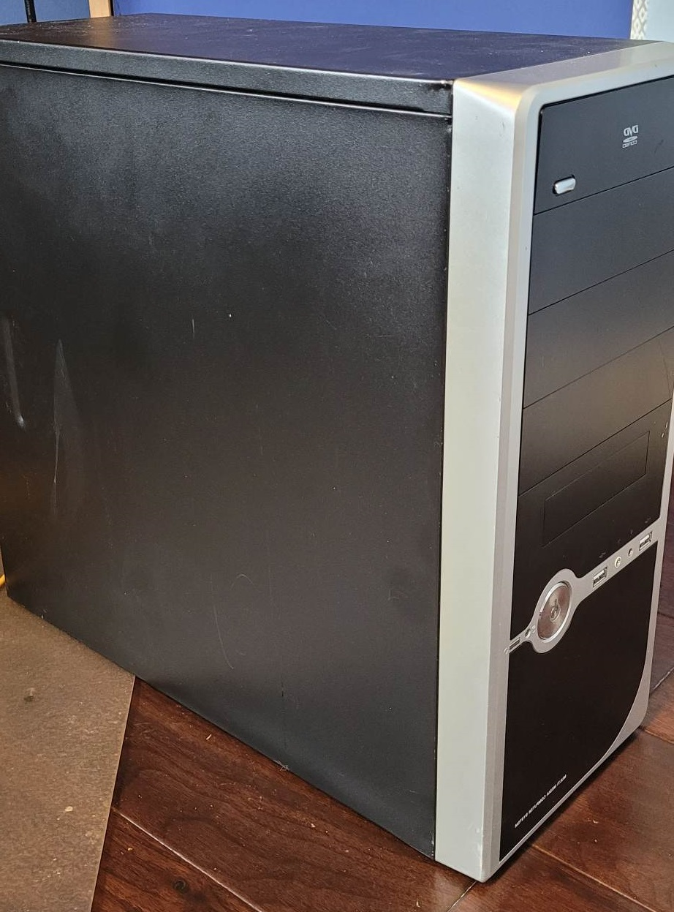
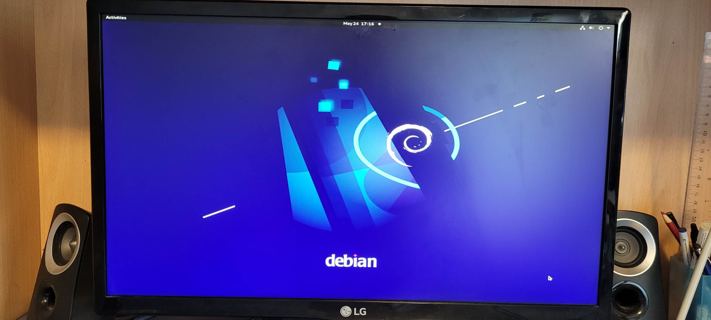

Personal Home Server | Linux
I came into the possession of a 19-year-old computer running a windows XP 32-bit architecture, and it seemed so wasteful throwing out an entire PC even if every component is vastly outdated. Thus, my home server was born.

I made a network attached storage (NAS) home server, so I can keep files in the server that can be
accessed
from any device connected to my home network. This means that I can easily create a file on my laptop,
save
it to the server, and then access that file from my phone and desktop computer without the need to
transfer
any files.
I accomplished this by wiping windows XP from the system and installing Debian Linux instead with a
bootable
USB. I did this because Debian Linux is lighter than windows XP. Once I installed Linux, I also learned
that
it was simple to install the tools necessary to turn the computer into a NAS right from the Linux
terminal.
First, I explored protocols that could help me establish the server-client model of a NAS, and the
internet
was advising me to use SSH. SSH or secure shell protocol allows secure networking with a client-server
model.

After installing SSH, I used a Linux tool called Samba to enable communication from my windows machines
to
the Linux server. I wanted to be able to access the files in the server through the windows file
explorer
and Samba is the tool that allows this. It also controls things such as read and write permissions of
the
server directory.
With Samba and SSH installed, that's everything I needed to use the server drive on windows file
explorer as
well as any other device connected to my home network. The drive is already password protected and now I
have a cool new storage solution because of a fun project!